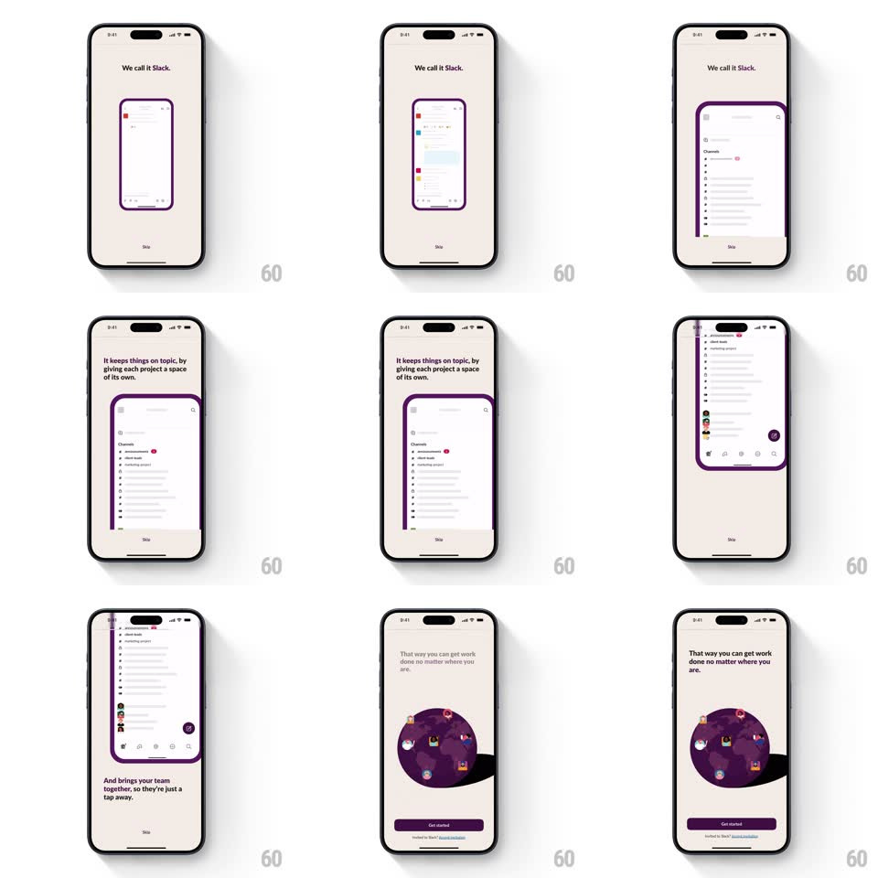

Media
Frame-by-frame

Rebuild this interaction 1:1: Slack's auto-playing intro carousel - a phone mockup pans and zooms across Slack screens ("We call it Slack.", channels, team) on a cream background, then the phone shrinks into a purple globe of avatars for "get work done no matter where you are" with a Get started button.

Rebuild this interaction 1:1: Slack's auto-playing intro carousel - a phone mockup pans and zooms across Slack screens ("We call it Slack.", channels, team) on a cream background, then the phone shrinks into a purple globe of avatars for "get work done no matter where you are" with a Get started button.
## Integration
Integration: stack-agnostic spec - springs given as stiffness/damping, timed motions as duration + curve; map every value to your framework and animation library of choice.
## Scene
Cream background, headline top, Skip link bottom. Center: a rounded phone mockup showing Slack UI. Final frame: the phone nested in a dark purple circle ringed with avatar dots, headline above, purple "Get started" button below.
## Motion spec
Pattern: auto-advancing pan-and-zoom product tour.
- Each scene: the phone's screen content pans vertically and zooms gently (Ken Burns, 3.5s per scene, ease-in-out) while the headline crossfades (300ms); the phone itself tilts +-2deg on scene changes (spring ~300/20).
- Scene transitions: the phone slides 30px and crossfades to the next screen (500ms), the new headline rising 12px as it fades in.
- Channels scene: channel rows highlight in sequence with a soft purple wash (200ms each) - the tour "uses" the app.
- Finale: the phone shrinks (scale 1 -> 0.45, spring ~320/18) and sinks into the purple circle as avatar dots pop around its rim (scale 0 -> 1, spring ~400/16, staggered 40ms around the ring); the Get started button slides up and the Skip link fades out.
- A page indicator (or progress tint on the button) tracks position through the scenes.
## Calibration
- Auto-advance every ~3.5s; any tap on Skip exits immediately (150ms fade).
- The phone is always the largest element until the finale hands focus to the button.
## Reduced motion
Scenes crossfade statically; no pan/zoom or tilt.
## Don't miss
- The mockup shows REAL product UI, not illustrations - the tour sells the actual app.
- The globe finale converts "anywhere" into a picture - phone plus planet, one idea.